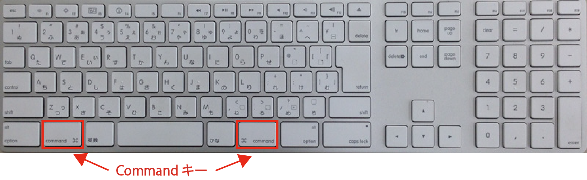

プログラミング言語論および演習 (演習前半)
** ショートカット早見表 **
Mac JIS キーボード (神戸大学教育用端末のもの)

Windows と Mac のショートカットキー対応の早見表
| ショートカット | Macキー | (参考) Windowsキー |
|---|---|---|
| 取り消し | Command + Z | Ctrl + Z |
| コピー | Command + C | Ctrl + C |
| 切り取り | Command + X | Ctrl + X |
| ペースト | Command + V | Ctrl + V |
| 検索 | Command + F | Ctrl + F |
| 全選択 | Command + A | Ctrl + A |
| 新規ウィンドウ | Command + N | Ctrl + N |
| 新規タブ | Command + T | Ctrl + T |
| ウィンドウを閉じる | Command + W | Ctrl + W |
| アプリの終了 | Command + Q | 閉じる |
| アプリの強制終了 | Command + Option + Esc | Ctrl + Alt + Del |